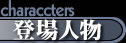
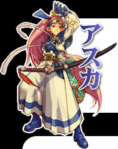
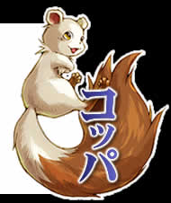
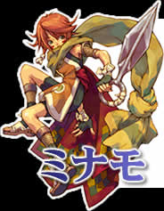
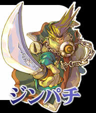
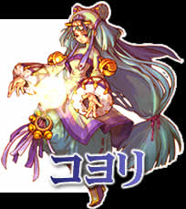
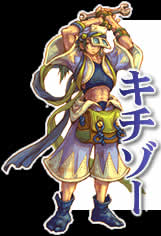
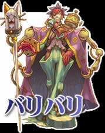

风来的西林外传～女剑士飞鸟见参～Windows版
〖登场人物绍介〗

����今作的主角アスカ是以前在N64版中与西林一起冒险共同作战过的女剑士，今次在修行途中经过天轮国时遇见了与西林分开修行的コッパ。后来听说天轮国发生了一件奇怪的事于是决定留下来调查清楚。

����具有听懂人类语言的特殊能力「�Zりイタチ」的鼹鼠コッパ，一直是跟随西林冒险的最好同伴。今次与西林分开修行途经天轮国时遇见了アスカ，为了协助アスカ调查奇怪事件的真相而一起展开冒险。

����在经过1年时间的修行之后回到故乡钢贺城的女忍者ミナモ发现城中的人似乎都一副心事重重的样子，更令ミナモ倍感疑惑的是久别的父亲与1年前判若两人，对她很是冷淡，到底发生了什么事呢？
����钢贺城的城主、钢贺忍者团的总头领ジンパチ，一直以来经常帮助村人击退袭击村庄的怪物，拥有极高的威望和人气。但是不知从何时开始ジンパチ多次率领忍者团袭击村民，疯狂抢夺粮食和财物，村人们怨声载道却又无可奈何，不少村人无法再忍受ジンパチ的所作所为而逃离了村庄。

����主持「リ�`バ祭」拥有极高灵力的天轮国司祭コヨリ，由于容貌俏美且待人温柔体贴因此成为众多国民追奉的偶像。


����把「便宜且强」作为制作信条的エレキ箱细工师キチゾ―，说话带有浓重的关西腔。由于才华横溢且待人和气所以拥有很高的人气，因此遭到同行バリバリ的嫉妒。
����以「エレキ箱是艺术」作为制作信条的エレキ箱细工师バリバリ，一看样子就知道是个负面角色，非常仇视同行キチゾ―，大有「既生瑜何生亮」的悲哀。

[游戏简介]
〖登场人物〗
[故事背景]
[游戏系统]
[壁纸下载]
[返回首页]